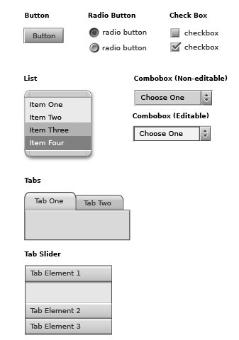
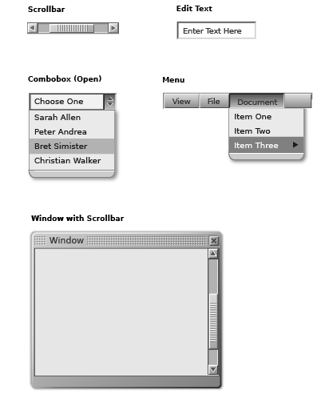
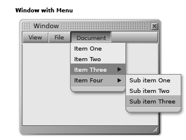
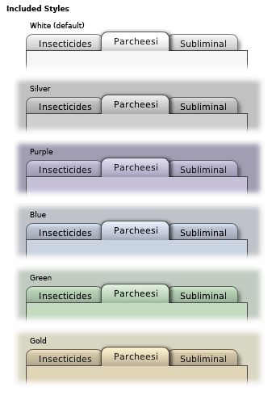
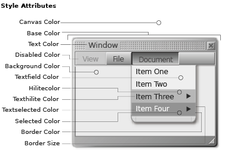
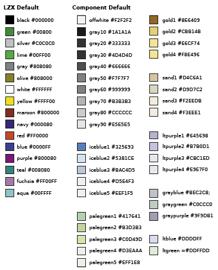
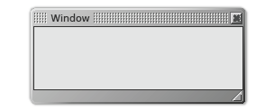
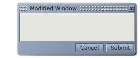
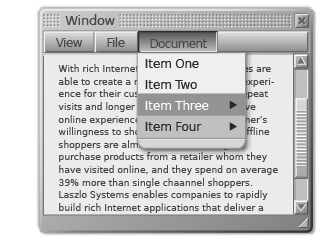

OpenLaszlo Components (LZ Components) are a core set of customizable user interface devices included with the OpenLaszlo Server.
LZ Components are written in the OpenLaszlo language (LZX) and designed to facilitate the construction of LZX applications. The set (illustrated on the following page) mimics the rich behavior of operating system and client software interface elements.
Component features
Using Components
Components can be used in their default form, or may be modified to adapt to the design of the applications that include them. This document covers several levels of modification:
Colorization
The simplest method of modifying components is to change the "style".
Style is a palette which defines a family of colors for the component set. There are 6 styles included with the OpenLaszlo platform. New styles can easily be included by modifying existing values.
Modifying Attributes
Each component has a set of adjustable parameters called "attributes". Attributes are contained in the component code and surface common controls for adjusting values such as width, height, color, and positioning. Information about the attributes of each component are located in the LZX documentation.
Replacing Visual Resources (Skinning)
Visual transformation of the components is possible by replacing resources (skinning). Knowledge of component construction, details of assembly and production methods are necessary to accomplish this.
OpenLaszlo Components Set
These are examples of the components included with OpenLaszlo Server:



The color of the components can be globally modified by changing the style. Style is referenced by the application utilizing the component set and automatically affects any component included. There are six styles included in the OpenLaszlo component set. The default style is "white".

The set of attributes in a style specify the color values for different parts of a component. These colors can be adjusted independently and automatically affect the component set globally. Each of the style attributes below (except "Border Size") is defined by a hexadecimal color value. Most of the colors used directly reflect the specified color. The "Base Color" attribute is the main tint applied across components. This value adds color to the resources that have been created in grayscale. This colorization will affect resources differently based on their original value. Some experimentation may be necessary to find a tinting color that produces the desired colorization.

The styles are defined in the file "defaultstyles.lzx" which is located in the "base" directory (more on file locations in the "Component Files" on page 5). The code is fairly simple to evaluate and uses names for color values which are defined in the component color palette. An overview of the code for style is in the LZX reference.
It is helpful to create a color palette when building new styles. A palette is a simple library where hexadecimal values are given names. It is useful to experiment and choose multiple colors before creating a palette.
These are the colors defined in LZX and LZ Components. They can be referred to by name in LZX code. Component colors are in the "colors.lzx" located in the "base" directory.

Beyond the global adjustments achieved through styles, each component also has its own distinct attributes. While it is not necessary for a designer to program in LZX, understanding the basic syntax and an awareness of existing attributes expedites modification of the component set. The attributes of each component are listed in the LZX Reference.
A component is defined in code by a "view" or "tag". Using the tag <window/>, for example, will add a window to an application. Window has a content and title area (with gripper) by default. The example below also has a title defined and enabled close and resize buttons.

Attributes are used to describe and modify a particular instance of a component. When the attributes are accessed through the tag, that instance is modified. In the example below, the attribute for color is changed, the title has been revised, the offset for the content area has been increased, resize widget has been removed and buttons (with their own attributes) have been included.

This is only one of many possible ways to modify this particular component. Familiarity with attributes makes minor customization painless and expands the potential for creative solutions.
Components are designed to work together to form more complex structures. It is easy to add a scrolling list and a menu to a window simply by nesting the subordinate component tags in the window. The example below is constructed using only default components.

This flexibility and the ease of changing the values of attributes simplifies the modification of the default look for designers and developers.
The look of a component can be significantly altered to correspond with the design of an application by changing resources. This is achieved most easily by replacing the default resources with custom resources of the same size, file name and format. Resources which are replaced, but contain the same name will automatically be updated when the application is refreshed. Alterations using sizes or file types different from the default set is possible, but will require a deeper understanding of construction methods. The Component Construction section of this document provides descriptions of how each is assembled, the file names, and states. If designs for an application involve a look + feel or interactivity beyond the scope of the default component set, the LZ and/or Base components will need to be modified.
Component files are located in the LPS directory. The path to the "Components" directory is: $LPS_HOME/lps/components/... The OpenLaszlo component set is comprised of four categories of files:
Base Components
LZ Components extend one or more base components. These provide the underlying logic for the set and contain no visual resources. For the most part, designers will not need to manipulate these files.
LZ Components
LZ Components define the class for the UI device. These files utilize visual resources and define attributes of the component. These are the LZX files which will most likely be modified by designers. They generally contain resource inclusions and attributes at the top of the code and are relatively easy to understand and manipulate.
LZ Resources
Resources are the visual assets that make up the look (skin) of a component. Resources may be a variety of file types, depending on the behaviors of the objects, the desired effect, or look. The resources are often pieces used to create whole components and their respective states. Visual reference for resources are covered in the "Component Construction" section. The default color of the resources is gray, which is used to provide a neutral palette for colorizing. There are some visual elements in the components that are not external file resources. The LZX language is capable of building primitive shapes (rectangles) and these are used where possible within components. Often these shapes are more efficient to use than a resource as they decrease load time of an application and increase performance.
Fonts
A collection of various True Type Format (ttf) fonts are included with the OpenLaszlo platform. The default fonts used in components are the outline font Bitstream "Vera" and the Ultra Pixel Font "Verity". The outline font can be used at any point size, but is not recommended for sizes smaller than 12 point due to poor rendering quality of the Flash player. To circumvent this problem, the Verity is used for smaller instances. Ultra Pixel Fonts, unlike other bitmap fonts, forces anti-aliasing which creates smooth, legible characters. Verity is included in 9 and 11 point sizes with roman, italic, bold and bold italic styles. This font is designed to mimic the look of Bitstream Vera and can, therefore, be used seamlessly in conjunction with the outline version. Bitmap (or Pixel) fonts such as "Verity" will only render correctly when specified at 8pt. The Verity ttf file (9 or 11) must be used to change size. The default font Verity contains an unaccented subset of characters. For the full Windows Western Unicode font set, use VerityPlus, which includes accented European characters.
The Bitstream font Vera was released as an open source font for the Gnome Project. The Ultra Pixel font Verity was built by Christopher Lowery using technology produced by Truth in Design.
Creating your own resources to modify the look of a component requires an understanding of not only the construction, but also of the characteristics of file types and the manner in which LZX utilizes them.
Component File Types
Although LZX supports multiple graphic formats, The default resources for components are almost entirely .swf files. There a few instances where .pngs have been used for specific reasons (documented in Component Construction). The primary reason for using .swf files is that they are vector-based, and therefore resolution independent. This independence allows files to be resized or stretched without degrading. .Swf files are the only vector file type supported by OpenLaszlo. Although the obvious tool for creating ..swf files is Macromedia Flash, many vector-based applications, such as Adobe Illustrator allow export of files to this format. If the option is given, .swf files should always be saved as version 5.0. The exporter for Illustrator 10 does not provide an option, but uses 5.0 by default.
Working with Vector Art
There are some obstacles to overcome when creating vector art for export. A sometimes useful but quirky effect is that, unlike bitmaps, vector shapes can use fractions of pixels as values for placement and dimension. This can cause problems when the shape is exported and used in LZX. The shape will anti-alias to compensate for the non-integer value and effectively change the dimension of the resource. There are a handful of instances where this can be beneficial, but most often it will cause annoying alignment issues.
Working on a Grid
There are several methods to ensure integer pixel values. Regardless of the vector-based application being used, it is crucial to set the unit of measure to pixels (or points, as they are equivalent). This includes creating a pixel grid and using the "snap to grid" feature. It is also helpful to control dimension and position objects numerically, as this will lower the possibility of fractional values. These procedures predominantly apply to rectilinear objects. Circles and angles will anti-alias by nature, however, by aligning points on pixel boundaries more predictable anti-aliasing will be experienced. There are also instances (such as in Macromedia Flash) where the position of an object on the page or stage will be translated into the resulting file. Unless an offset is part of the desired effect, make sure that objects are "zeroed out" (x=0, y=0).
Transparency
Many of the resource files employ transparency. This allows the object to be placed on, and anti-alias to any background. This is an automatic feature of .swf files. Unless a background is created or specified, areas around the object are automatically transparent. In "multi-frame" resources (those with multiple states), transparency is used to ensure alignment of resources with different dimensions. The disabled state of most components is an example of this. Resources for this state are smaller than the enabled states, but are aligned because they incorporate a transparent rectangle with dimensions equal to the enabled resource.
Preparing Resources
To create the multiple resources that are used to build the majority of the components it is useful to first build the object as a whole and then slice it. Some vector-based applications (including Adobe Illustrator) have the ability to "slice to guides" this is intended to be used in the production of multi-part resources, but does not work reliably. A superior, but less-automated method is to cut along the grid or guides with the "knife" tool. This is handy because it allows cutting through multiple (unlocked) layers. To guarantee a straight cut along pixel boundaries set your documentÕs magnification to increments of 100 (200%, 1600% etc) and hold shift key to force a straight line. With the resource cut into appropriate pieces, it is then necessary to move each resource individually to a separate document and export to ..swf.
Objects with solid fills can be easily cut and exported from any vector-based application. Objects with strokes will not be correctly rendered in LZX and should be converted to outline shapes (Strokes created in Macromedia Flash are an exception). If the object to be cut has a gradient fill, many applications will not cut the fill correctly. For objects with gradient fills it is preferable to export the object whole, import it into Flash for cutting. Flash effectively "flattens" the resource and will not repeat the gradation in each piece. When importing vector files into Flash, it is best to already have them in the .swf format. Cutting and pasting or importing Illustrator files into Flash has a tendency to drop pieces, botch bezier curves, incorrectly translate color or entirely deny the import.
In order to successfully skin the component set without major modification of the code it is imperative to understand the methods of construction. The following pages detail each component.
Copyright © 2001-2006 Laszlo Systems, Inc.
All Rights Reserved. Unauthorized use, duplication or distribution is strictly prohibited. This is the proprietary information of Laszlo Systems, Inc. Use is subject to license terms.